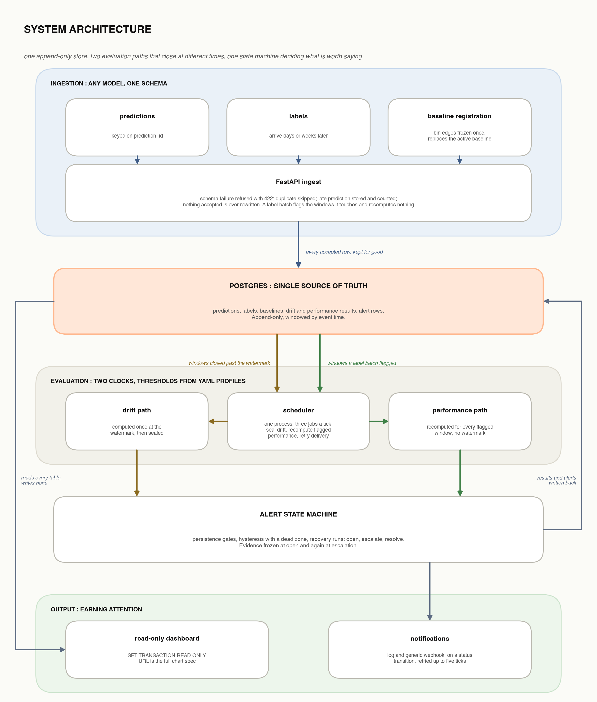

A model-agnostic monitoring service. Any model POSTs its predictions to one schema; driftwatch stores them, compares live inputs and scores against a frozen training baseline, scores performance once the real outcomes arrive (often weeks later), and raises an alert only when something has actually degraded.
driftwatch demo <scenario> against Postgres 16, then driftwatch demo-verify. Synthetic, seeded data: regenerating reproduces every figure to the last digit.One append-only store, two evaluation paths that close at different times, and one state machine deciding what is worth a person's attention.
POST /predictions, /labels, /baselines on FastAPI. Schema failures refused with 422, duplicates skipped, late rows stored and counted. X-API-Key guards every write.
Nothing accepted is ever rewritten. Windows are cut by event time, so a backfill years later lands in the same UTC-aligned hour.
Drift (PSI, KS, Cramér's V, JSD) is sealed once per window, and refused where its sampling-noise floor exceeds the clear threshold. Performance (PR-AUC) is recomputed whenever labels land.
Separate fire and clear thresholds with a dead zone between them; consecutive-window gates to open, escalate and resolve. Evidence is frozen at open and again at escalation.
Log and webhook on each transition, retried for up to five ticks. A read-only dashboard draws not_computable as an explicit marker, never as a gap.

Each scenario injects one specific fault, or none, into a seeded synthetic model. After the run, demo-verify reads the database back and asserts that driftwatch caught exactly that fault and nothing else. Hover any window, or replay the run to watch the state machine decide.
Everything on this page reproduces from a clean checkout. The dashboard is a local Streamlit app; the seeded scenarios are the proof.
# pinned deps, a Postgres 16, migrations uv sync docker compose up -d postgres uv run alembic upgrade head # reset the database, load one scenario end to end, verify it uv run driftwatch demo segment_isolated uv run driftwatch demo-verify segment_isolated # load the other four additively, as this page did uv run driftwatch demo clean --no-reset uv run driftwatch demo covariate_shift --no-reset uv run driftwatch demo concept_drift --no-reset uv run driftwatch demo burst_shift --no-reset # explore, or bring up API + scheduler + dashboard together uv run streamlit run src/driftwatch/dashboard/app.py docker compose up --build
Onboarding a new model is a YAML file, not code: its feature schema, segments and which profile governs its alerting. Two profiles ship and both are exercised above.
CI regenerates and verifies every scenario at its shipped seed and at two others (--seed 7, --seed 11), one matrix job each. Set API_KEY to require X-API-Key on every write; leave it unset and the API says so at startup.
The data is synthetic and staged. Scenario parameters, including a bimodal score distribution, were tuned so the signal is legible on a chart, not to claim detection sensitivity on real production traffic. What the numbers show is narrower and more useful: a scenario built to demonstrate one property demonstrates it, the verifier re-derives that from the database, and the same seed reproduces it exactly.
driftwatch evaluates on a schedule over windows; it is not a per-request detector. It tells you something changed and does not retrain, roll back, or swap in a challenger. It has not run against real production traffic. Authentication is one shared key. The sampling-noise floors refuse rather than correct: a signal asked for at a volume that cannot carry it is reported as silence, and the operator widens the window or drops the test.